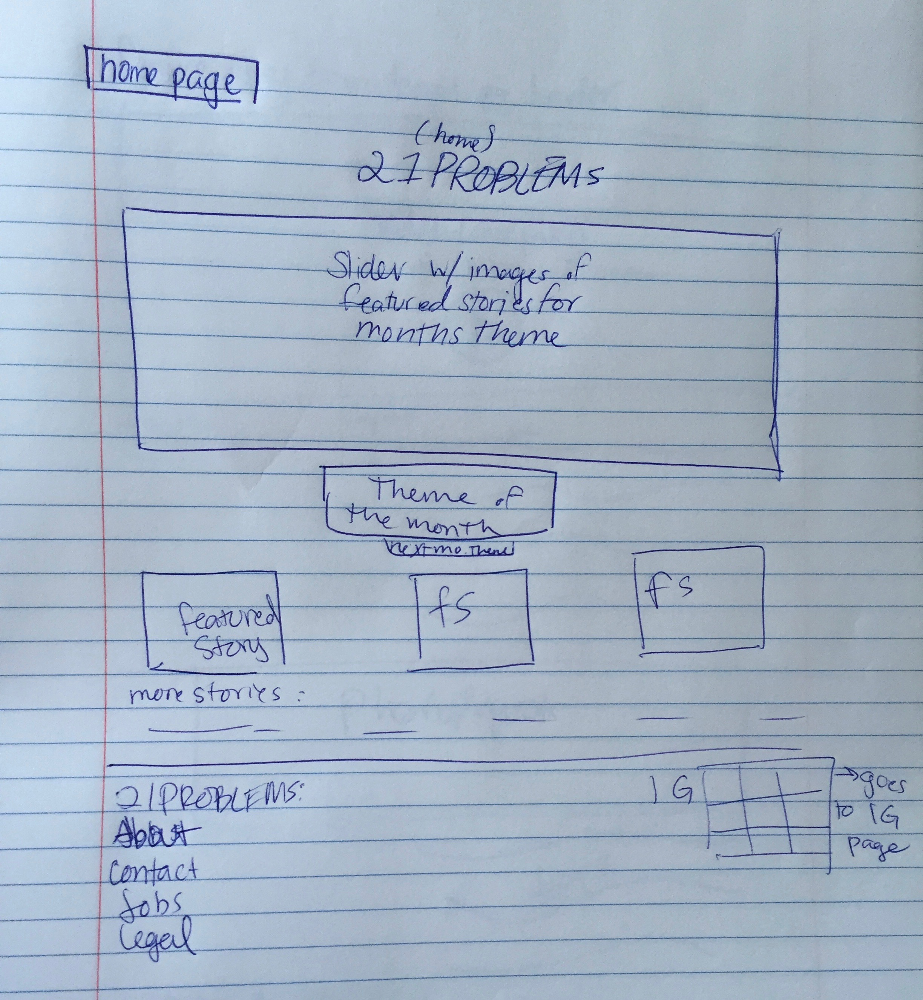
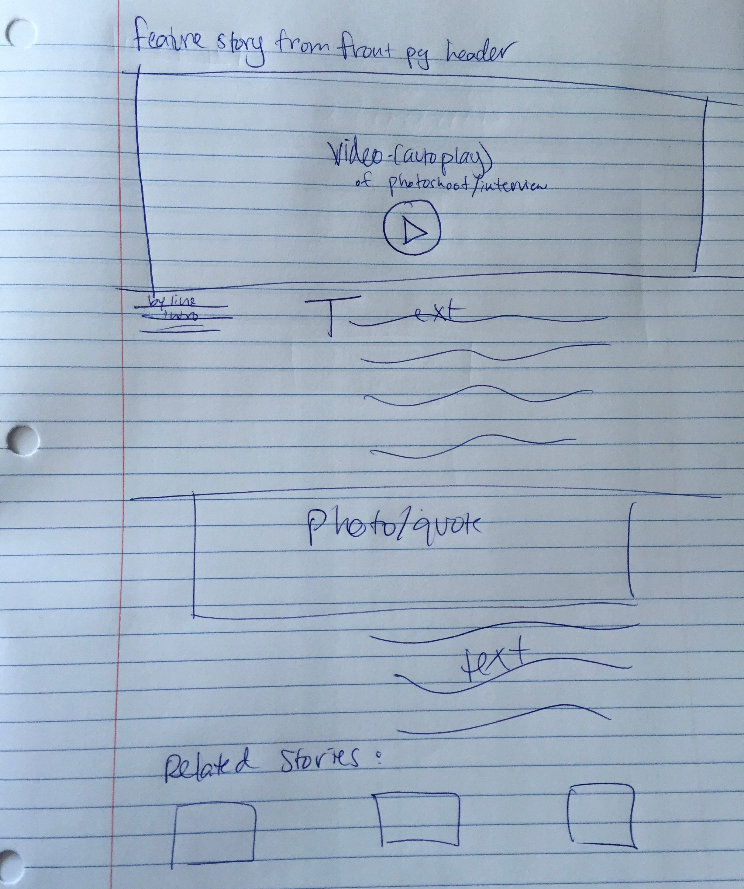

Letter From The Editor
Dear readers,
As a modern day twenty-something woman, it’s increasingly hard to find a place online where you can express yourself to a community of other twenty-something women. But now there is a place you can do that. This is for you. This is 21 Problems.
Think of it as a mixture between a more mature Rookie, i-D, NYLON Magazine, and your own personal blog. 21 Problems is here for expression, good or bad. It’s for confession, good or bad. It’s for support, community, and as a safe space to bond with your fellow women.
Updating the website daily, but following a monthly theme, we will be covering everything from beauty tips to style tips, from poetry writing to fiction writing, and from short docu-series to photo series. We know we don’t all look alike and don’t all have the same interests, so we’re here to represent, you, the modern day twenty-something.
We will also offer a yearly magazine for purchase, which will include the year’s best content as well as exclusive content.
Welcome to the club.
Xxoo,
Gabriella
End-to-end flow of 21 problems & the important views/pages that demonstrate its value:
Below are rough sketches of the wire frames that show the flow design and flow charts for each of the designs.

